In this Topic Hide
FAN$IER's default price tables are viewed with the Activity Costs & Product Prices viewer accessed through the Help menu within FAN$IER's Main Menu.
It is much easier to assess the long-run real price trends for a particular product, such as Canadian Lumber Standards (CLS) dimensional lumber, than for logs. CLS lumber is a relatively homogeneous product used mainly in one integrated market, the North American housing industry. Logs on the other hand, are heterogeneous, used to produce many varied products for many different markets. For example, the specifications for sawlogs used to produce appearance-grade lumber differ considerably from the specifications for either structural-lumber sawlogs or pulp logs. The markets for the end-products also differ in their nature, spatial integration and their demand for certain species and wood quality characteristics. For example, dimensional and wood quality requirements for the Japanese lumber market differ from the North American structural lumber market. Relative exchange rates between and within markets also vary significantly over time, increasing the complexity.
Figures 3-12 and 3-13 below graph the monthly average market log values by grade for hemlock-balsam and Douglas-fir logs respectively. The figures show the prices since the adoption of the current log grading system in 1990. A time frame of eleven years is hardly adequate to examine long-term trends in log prices. Unfortunately it is difficult to develop a longer time frame because of the changes made to the log grading rules in 1980 and 1990. These changes make it difficult to compare log grades over time.
Figures 3-12 and 3-13 suggest that the grades can be assigned to one of two groups: sawlogs (grades H, I and J) and pulp logs (grades U X and Y). While the U and X grades produce some lumber, most of their log volume is used for pulp.
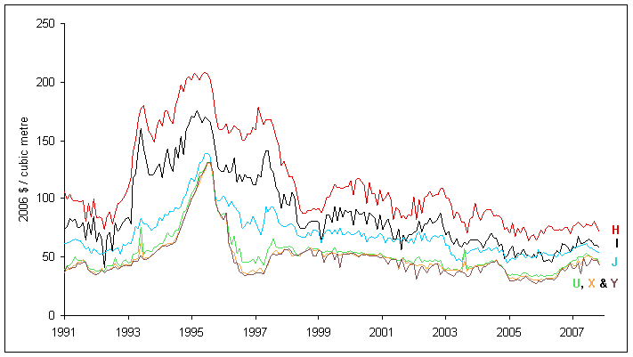
FIGURE 3-12. Hemlock-Balsam monthly log prices in constant 2006 dollars (March 1990 - August 2007).
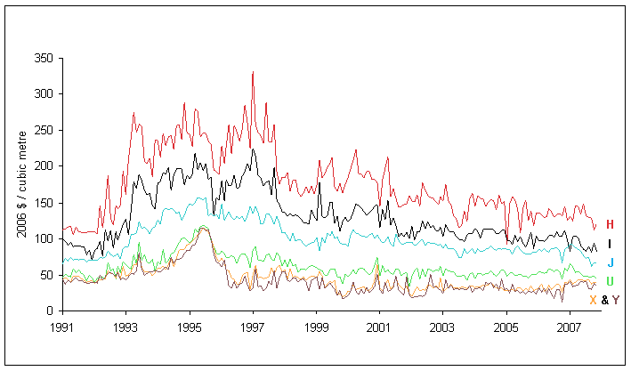
FIGURE 3-13. Douglas-fir monthly log prices in constant 2006 dollars (March 1990 - August 2007).
Obviously, the value derived from sawlogs comes from the value of the lumber that can be cut out of those logs. Thus, we look to the coastal lumber markets to understand the variations in coastal sawlog prices. Figure 3-14 below graphs Statscan's monthly softwood lumber industrial product price index for coastal B.C. for the period January 1981 to December 2006 (Statistics Canada, various years). In the real price index, the lumber price index was adjusted for inflation using the CPI for Canada. The graph shows the average value for the real index for the period as a dashed line. The real index reveals that real lumber prices were fairly stable over the period 1981-1992 but rose sharply in 1993. Since then the index, while fluctuating, shows a downward trend.
The shape of the coast lumber price index follows the shape of the log prices in Figures 3-12 and 3-13 over the same time period indicating that sawlog prices are derived from lumber prices.
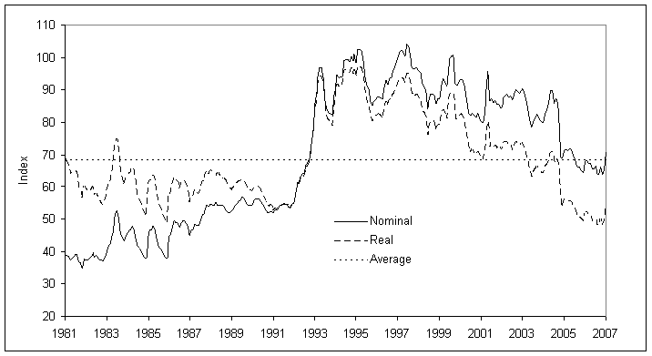
FIGURE 3-14. Coastal softwood lumber price index.
The actual market for lumber from the Coast is, however, more complex than it appears from the coast lumber price index. The index for the coast is made up from a variety of species, lumber products and markets. This is unlike the interior, where there is essentially one product and one destination for lumber produced - CLS lumber for the North American housing industry.
The abundance of old growth on the coast allows for the production of a significant amount of appearance grade lumber in addition to structural lumber. Cedar, a non-structural material, represents twenty five percent of the coast’s lumber production.
The destination for the lumber produced on the coast is, for the most part, split between North America and Japan. Products sold to each country are distinct and command different prices. The internal policies and the state of the economies of the importing countries as well as currency exchange rates play a major role in determining the prices received for coastal lumber.
Over the past thirty years Japan has emerged as a major market for lumber exports. Figure 3-15 shows the exports from British Columbia to Japan had steady growth until 1996 when there was a downturn in the Japanese economy. Exports peaked in 1996 to 2.6 billion board feet of lumber, then dropped to less than 1.4 billion board feet in 2005, returning to levels not seen since the 1980s.
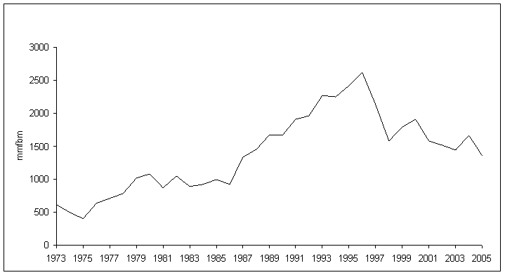
FIGURE 3-15. B.C. softwood lumber exports to Japan.
Most of this volume came from the coast. Over the period 1993 to 1998 lumber from the coast made up seventy five percent of British Columbia's exports to Japan. This represents about forty five percent of the coast's lumber production (Price Waterhouse).
For the years 1997 and 1998 the average price for exports to Japan from the coast was about $850/mfbm. There was a seventeen percent drop in the average price from 1997 to 1998. (Price Waterhouse).
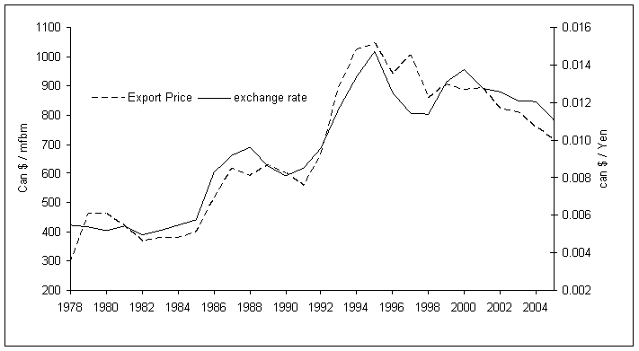
FIGURE 3-16. The price (Cdn $) of lumber exported to Japan correlates with the exchange rate.
Figure 3-17 below graphs the prices of British Columbia’s exports to Japan from the Japanese consumer's viewpoint, by converting the average values to yen/MBF. It also graphs the average value in constant 2006 yen/MBF, which was estimated using the CPI for Japan. The graph suggests that real value in yen per MBF declined over the period shown. However, the decline in average real value when expressed in yen/MBF might be due to a change in quality and species mix exported to Japan. We can't confirm this hypothesis since we lack B.C. data on the grades and lumber products shipped.
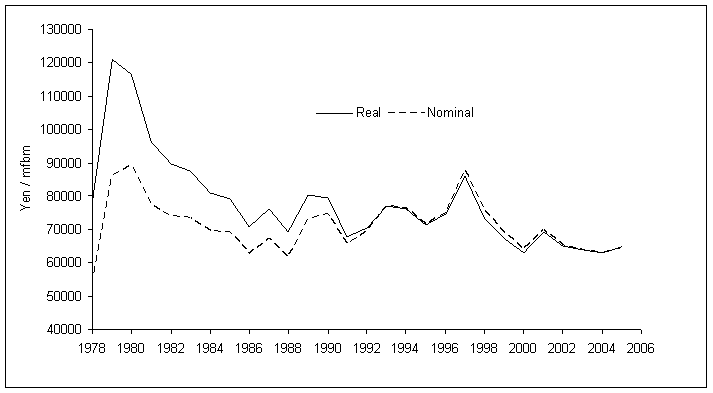
FIGURE 3-17. Average value of B.C. softwood lumber exports to Japan in yen/MBF
In Figure 3-18, however, changes in Japanese wholesale lumber prices for four species products show the same downward trend in real lumber prices, indicating the trend does reflect a real drop in Japanese prices. (JAWIC, various issues)
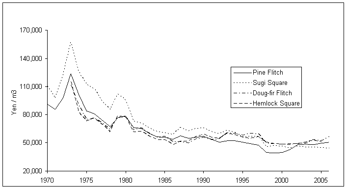
FIGURE 3-18. Selected Japanese wholesale lumber prices in constant 2006 yen.
This suggests that future increases in sawlog prices are not likely to come from real price increases for lumber in Japan. Rather decreasing lumber prices are indicated, which means that future increase in the value of lumber shipped to Japan, when measured in Canadian dollars, may only result from further reductions in the Japan/Canada exchange rate which are not likely over the long run.
North America is the other large market for lumber produced on the coast, consuming about forty five percent of the lumber produced. Canada and the United States share this market. About twenty five percent of the lumber is sold in Canada and about twenty percent is sold in the USA. Prices for the years 1997 and 1998 averaged $790 per mfbm in Canadian dollars. The difference in prices between the US and Canada suggests these markets are also distinct with prices for US exports averaging thirty percent higher.
A large portion of sales into the North American market is cedar, up to half the volume shipped. Figure 3-19 shows the real price for cedar, in US dollars, has shown slight downward trend over the past thirty years. Lumber from other coastal species also shows a decline in real prices prices measured in constant dollar terms. That is, the effects of inflation have been removed when comparing prices occurring in different year over this period. Over this period the consumer in the United States has enjoyed a real decline in the price for lumber. As was the case with the Japan, we should not count on future increases in real lumber prices in the United States to increase sawlog prices in British Columbia.
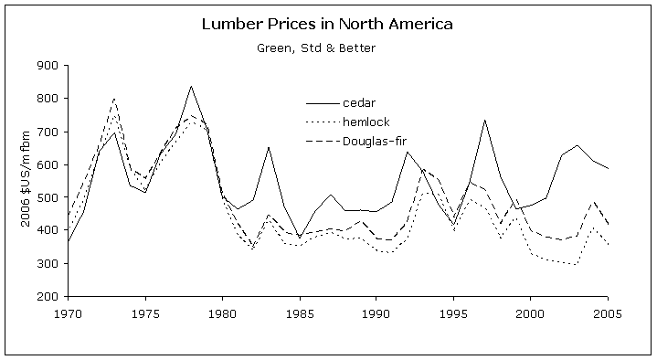
FIGURE 3-19. Lumber prices in North America.
Figures 3-16 and 20 demonstrate the role exchange rates played on the price received for our exports when measured in Canadian dollars. The exchange rate tracks lumber prices in Canadian dollars reasonably well. Over the past thirty years any real price increases for lumber experienced by Canadian producers is correlated with changes in the currency exchange rate between Canada and its customers.
If we consider that the relatively stable lumber prices measured in Canadian dollars is mainly due to changes in the exchange rate then we must consider the likelihood of future price increases being linked with the likelihood of future increases in the value of the US dollar and the yen relative to the Canadian dollar. Unless Canada transforms itself into a third world country, it seems unlikely that the exchange rates can indefinitely continue an upward trend. The course of the exchange rate since 2004 confirms this view.
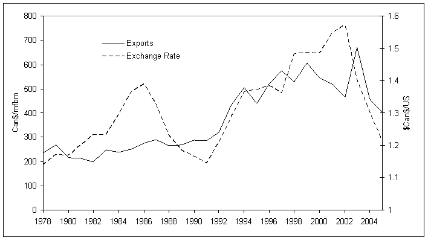
FIGURE 3-20. Average value of B.C.softwood lumber exports to the USA (nominal Canadian $/mbf).
Similarly, pulp log prices are derived from the price of pulp. Figure 3-20 below shows quarterly prices for NBSK pulp delivered to northeastern Europe in nominal and real US$/tonne (Pulp and Paper Week, various issues). The figure shows that real pulp prices are highly cyclical and suggests a downward trend in prices. However, little can be learned from this since trends can be sensitive to the time period selected. The period 1980 to 1996 suggests a neutral trend. The average for the period 1980 to 2006 was US$750/tonne.
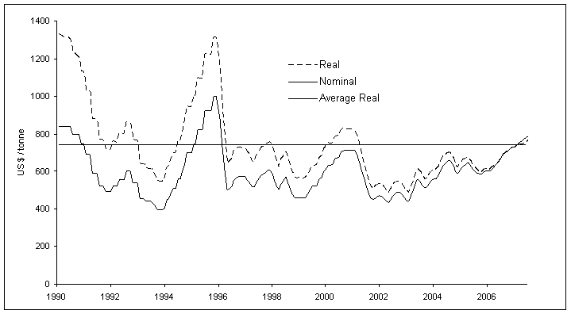
FIGURE 3-21. Northern bleached softwood kraft pulp prices (prices delivered N.E. Europe in nominal and 2006 US dollars).
The relationship between pulp prices and pulp log prices is somewhat clouded by the fact that residual wood chips from sawmills make up the majority of B.C. pulp mill wood fibre requirements. Thus, the relative availability and price of residual wood chips also affects the price of pulp logs. In addition, some logs from the pulp log sorts are used to produce lumber. Thus, pulp log prices are also responsive to lumber prices, but to a much lesser degree than they are to pulp prices. The combined affects of these forces are demonstrated in Figures 3-22 and 3-23 below. The first graph overlays the coastal wood chip real price index on real pulp prices. We calculated the real chip price index using Stats Canada's coastal wood chip price index, and then adjusted it for inflation using the CPI for Canada. The real chip price index closely tracks movements in pulp prices. The next graph overlays the real price of grade X and Y hem-bal logs on real pulp prices. While the log prices closely track pulp prices from 1994 to mid 1997, they were less closely linked before 1994 and after 1997. Coincident high lumber prices and high pulp prices during the period 1994 to 1997 probably caused the sharp spike in pulp log prices during this period.
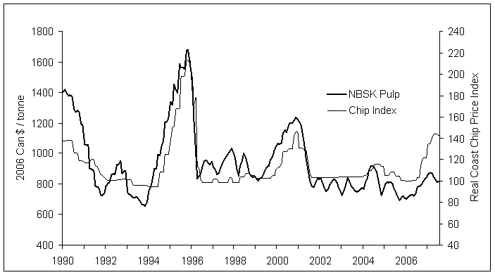
FIGURE 3-22. Northern bleached softwood kraft pulp prices vs. coastal chip price index adjusted for inflation.
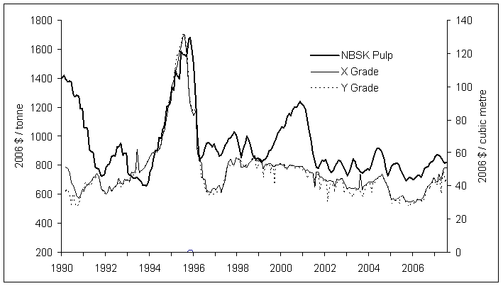
FIGURE 3-23. Northern bleached softwood kraft pulp prices vs. grade X and Y hemlock-balsam log prices.
The previous discussion suggests that averaging log prices over the period 1990-2006 is a reasonable proxy for long run average prices for both sawlogs and pulp logs. It should also be remembered that there will continue to be price volatility in log prices. The results of averaging log prices over this period are shown in Table 3-4 and are used as FAN$IER's default coastal log prices by species and grade. For information on hardwood log prices, see Hardwood Economics.